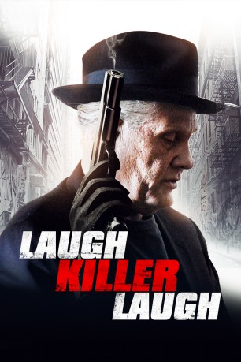
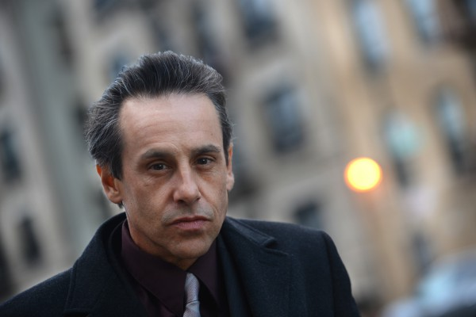

#7214 Die Kugel trägt schon deinen Namen
Alternativ: Laugh Killer Laugh
 
 IMDB-Wertung: 5.6 / 10
IMDB-Wertung: 5.6 / 10  Metascore: 0
Metascore: 0 
Der Juwelendieb Frank Stone (William Forsyth) ist ein absoluter Einzelgänger, der Nachts durch die Straßen von New York streift und bei seinen kriminellen Aktivitäten auch vor Mord nicht zurückschreckt. Getrieben von brutalen Albträumen, in denen er als Kind im Waisenhaus von dem damaligen Schuldirektor (Tom Sizemore) missbraucht wird, versucht er, in einem Schriftstellerkurs seine Vergangenheit zu bewältigen. Doch als die New Yorker Mafia mitbekommt, dass Frank seine Memoiren verfasst und dabei Geheimnisse der Unterwelt preisgeben will, steht er plötzlich selbst ganz oben auf der Todesliste…
Jahr: 2015
Dauer: 97 Minuten
FSK: 18
Land: USA Studio: Access-ATonspuren: DTS - ,
Untertitel:
Auflösung: 1080p (1920x1040) Größe: 10342 MB
Genre: Drama, Krimi
Regisseur: Kamal Ahmed
Drehbuch: Kamal Ahmed
Soundtrack:
Darsteller:
 William Forsythe als Frank Stone
William Forsythe als Frank Stone Tom Sizemore als Orphanage Headmaster
Tom Sizemore als Orphanage Headmaster-  Larry Romano als Vinny
- Robert MacNaughton als Creative Writing Teacher
- Angelo Bonsignore als Salvatore
- Gino Cafarelli als Detective Maas
 Mike Carlsen als Victor
Mike Carlsen als Victor- Robert Arensen als Dylan
- Salvatore Franciosa als Sal
- Joseph Ciminera als Pizzeria Owner , archive footage
 Kevin Corrigan als Ackley
Kevin Corrigan als Ackley Franky G als Detective Mantiga
Franky G als Detective Mantiga- Mark Love als Philly
- Ursula Anderman als Student
- Denny Dale Bess als Billy Bob
- Joseph Daniele als Henchmen 3
- Artie Lange als Himself
- Gaetano LoGiudice als Tough Tony's crew
- James Lorinz als Masked Man
- Chris T. Margaritis als Tough Tony's crew
- Melissa McMeekin als Wife
- Ángel Salazar als Cricket
- James Sferrazza als Poker Player
- Chelsea Skidmore als Singer
- Tony Vitucci als Tough Tony's crew
- Bianca Hunter als Jackie
- Victor Colicchio als Tough Tony
- Jim Fletcher als Lucifer
- Valentino Scaramella als Ronald
- Anthony Aveni als
- Radu Bentia als Romanian diamond dealer
- Joe Dipietro als Safecracker
- Mohamed Djellouli als Doctor
- Mike Herbst als MC
- Eric Klaastad als Student
- Steve Leventeris als Cop
- Phil Oddo als Driver
- John Pizzi als Ventriloquist
- Tommie Romola als Tough Tony's crew
- Joseph Pino Scurto als Poker player #2
- Laura Simon als Student
- Rino Vitucci als Tough Tony's crew
Datei: X:\FSK18-2015\Kugel trägt schon deinen Namen, Die (2015, FSK18, 1920x1040).mkv seit 09.10.2017
Festplatte: FSK18
 Es gibt insgesamt 23 Filme in der Gruppe 'FSK18-2015'
Es gibt insgesamt 23 Filme in der Gruppe 'FSK18-2015'